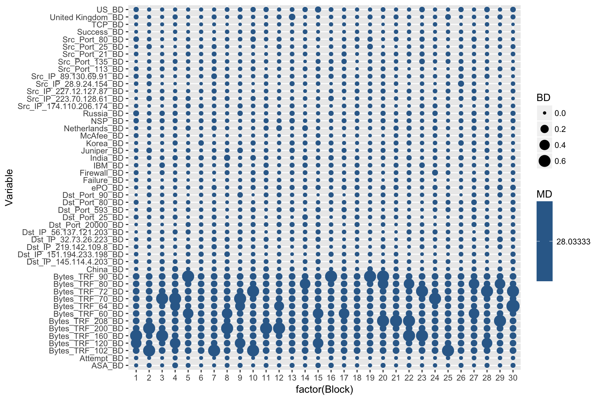
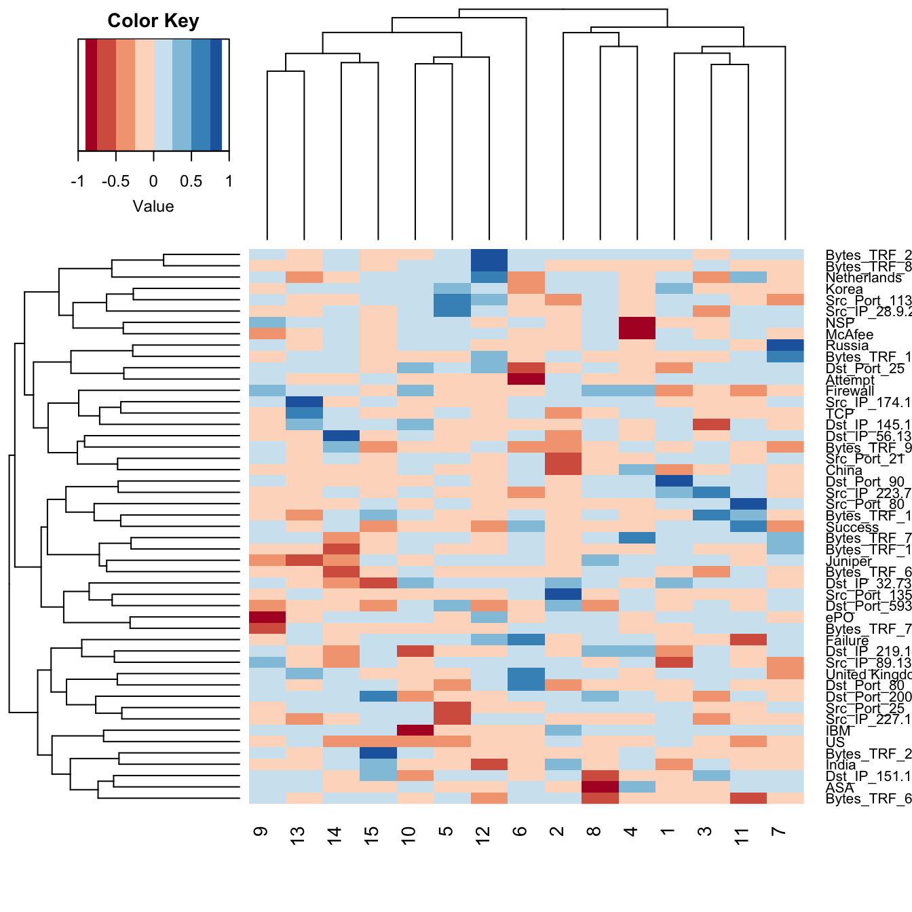
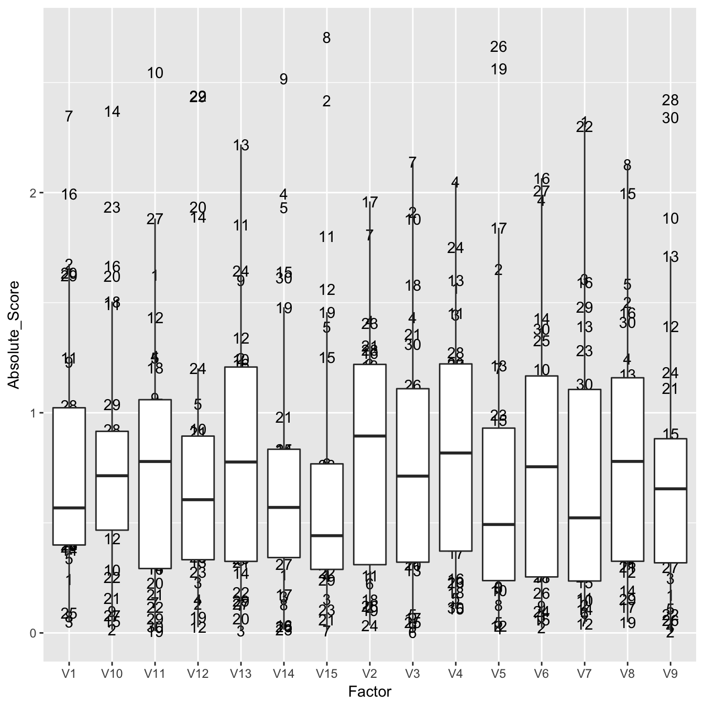

As the number of cyber-attacks continues to grow on a daily basis, so does the delay in threat detection. For instance, in 2015, the Office of Personnel Management (OPM) discovered that approximately 21.5 million individual records of Federal employees and contractors had been stolen. On average, the time between an attack and its discovery is more than 200 days. In the case of the OPM breach, the attack had been going on for almost a year. Currently, cyber analysts inspect numerous potential incidents on a daily basis, but have neither the time nor the resources available to perform such a task. anomalyDetection aims to curtail the time frame in which cyber-attacks go unnoticed and to aid in the discovery of these attacks among the millions of daily logged events, while minimizing the number of false positives and negatives. By incorporating a tabular vector approach along with multivariate analysis functionality, anomalyDetection provides cyber analysts the ability to effectively and efficiently identify time periods associated with suspected anomalies for further evaluation.
anomalyDetection provides 13 functions to aid in the detection of potential cyber anomalies:
| Function | Purpose |
|---|---|
tabulated_state_vector |
Employs a tabulated vector approach to transform security log data into unique counts of data attributes based on time blocks. |
block_inspect |
Creates a list where the original data has been divided into blocks denoted in the state vector. |
mc_adjust |
Handles issues with multi-collinearity. |
mahalanobis_distance |
Calculates the distance between the elements in data and the mean vector of the data for outlier detection. |
bd_row |
Indicates which variables in data are driving the Mahalanobis distance for a specific row, relative to the mean vector of the data. |
horns_curve |
Computes Horn’s Parallel Analysis to determine the factors to retain within a factor analysis. |
factor_analysis |
Reduces the structure of the data by relating the correlation between variables to a set of factors, using the eigen-decomposition of the correlation matrix. |
factor_analysis_results |
Provides easy access to factor analysis results. |
kaisers_index |
Computes scores designed to assess the quality of a factor analysis solution. It measures the tendency towards unifactoriality for both a given row and the entire matrix as a whole. |
principal_components |
Relates the data to a set of a components through the eigen-decomposition of the correlation matrix, where each component explains some variance of the data. |
principal_components_results |
Provides easy access to principal component analysis results. |
get_all_factors |
finds all factor pairs for a given integer. |
anomalyDetection also incorporates the pipe operator (%>%) from the magrittr package for streamlining function composition. To illustrate the functionality of anomalyDetection we will use the security_logs data that mimics common information that appears in security logs and comes with anomalyDetection.
library(dplyr) # common data manipulations
library(tidyr) # common data manipulations
library(tibble) # turning output into convenient tibble
library(ggplot2) # visualizations
library(anomalyDetection)
security_logs
## # A tibble: 300 x 10
## Device_Vendor Device_Product Device_Action Src_IP Dst_IP Src_Port
## <chr> <chr> <chr> <chr> <chr> <int>
## 1 McAfee NSP Attempt 223.7… 32.73… 135
## 2 CISCO ASA Failure 174.1… 219.1… 80
## 3 IBM SNIPS Success 174.1… 145.1… 80
## 4 McAfee NSP Success 227.1… 151.1… 21
## 5 Juniper SRX Success 28.9.… 145.1… 135
## 6 McAfee NSP Success 28.9.… 145.1… 80
## 7 McAfee NSP Attempt 28.9.… 56.13… 80
## 8 McAfee ePO Attempt 223.7… 151.1… 25
## 9 McAfee ePO Attempt 174.1… 151.1… 25
## 10 CISCO ASA Attempt 227.1… 56.13… 25
## # … with 290 more rows, and 4 more variables: Dst_Port <int>,
## # Protocol <chr>, Country_Src <chr>, Bytes_TRF <int>To apply the statistical methods that we’ll see in the sections that follow, we employ the tabulated vector approach. This approach transforms the security log data into unique counts of data attributes based on pre-defined time blocks. Therefore, as each time block is generated, the categorical fields are separated by their levels and a count of occurrences for each level are recorded into a vector. All numerical fields, such as bytes in and bytes out, are recorded as a summation within the time block. The result is what we call a “state vector matrix”.
Thus, for our security_logs data we can create our state vector matrix based on our data being divided into 10 time blocks. What results is the summary of instances for each categorical level in our data for each time block. Consequently, row one represents the first time block and there were 2 instances of CISCO as the device vendor, 1 instances of IBM, etc.
tabulate_state_vector(security_logs, 10)
## Some variables contain more than 50 levels. Only the 10 most popular levels of these variables will be tabulated.
## # A tibble: 30 x 54
## ASA Attempt Bytes_TRF_102 Bytes_TRF_120 Bytes_TRF_160 Bytes_TRF_200
## <dbl> <dbl> <dbl> <dbl> <dbl> <dbl>
## 1 2 5 0 1 1 0
## 2 0 4 1 0 0 1
## 3 2 3 0 0 1 0
## 4 5 0 0 1 0 0
## 5 3 3 0 0 0 0
## 6 2 4 0 0 0 0
## 7 2 3 1 0 0 0
## 8 3 6 0 0 0 1
## 9 0 4 0 1 0 0
## 10 2 3 1 0 0 0
## # … with 20 more rows, and 48 more variables: Bytes_TRF_208 <dbl>,
## # Bytes_TRF_60 <dbl>, Bytes_TRF_64 <dbl>, Bytes_TRF_70 <dbl>,
## # Bytes_TRF_72 <dbl>, Bytes_TRF_80 <dbl>, Bytes_TRF_90 <dbl>,
## # China <dbl>, CISCO <dbl>, Dst_IP_145.114.4.203 <dbl>,
## # Dst_IP_151.194.233.198 <dbl>, Dst_IP_219.142.109.8 <dbl>,
## # Dst_IP_32.73.26.223 <dbl>, Dst_IP_56.137.121.203 <dbl>,
## # Dst_Port_20000 <dbl>, Dst_Port_25 <dbl>, Dst_Port_593 <dbl>,
## # Dst_Port_80 <dbl>, Dst_Port_90 <dbl>, ePO <dbl>, Failure <dbl>,
## # Firewall <dbl>, IBM <dbl>, India <dbl>, Juniper <dbl>, Korea <dbl>,
## # McAfee <dbl>, Netherlands <dbl>, NSP <dbl>, `Palo Alto
## # Networks` <dbl>, Russia <dbl>, SNIPS <dbl>,
## # Src_IP_174.110.206.174 <dbl>, Src_IP_223.70.128.61 <dbl>,
## # Src_IP_227.12.127.87 <dbl>, Src_IP_28.9.24.154 <dbl>,
## # Src_IP_89.130.69.91 <dbl>, Src_Port_113 <dbl>, Src_Port_135 <dbl>,
## # Src_Port_21 <dbl>, Src_Port_25 <dbl>, Src_Port_80 <dbl>, SRX <dbl>,
## # Success <dbl>, TCP <dbl>, UDP <dbl>, `United Kingdom` <dbl>, US <dbl>Prior to proceeding with any multivariate statistical analyses we should inspect the state vector for multicollinearity, to avoid issues such as matrix singularity, rank deficiency, and strong correlation values, and remove any columns that pose an issue. We can use mc_adjust to handle issues with multi-collinearity by first removing any columns whose variance is close to or less than a minimum level of variance (min_var). Then, it removes linearly dependent columns. Finally, it removes any columns that have a high absolute correlation value equal to or greater than max_cor.
(state_vec <- security_logs %>%
tabulate_state_vector(10) %>%
mc_adjust())
## Some variables contain more than 50 levels. Only the 10 most popular levels of these variables will be tabulated.
## # A tibble: 30 x 49
## ASA Attempt Bytes_TRF_102 Bytes_TRF_120 Bytes_TRF_160 Bytes_TRF_200
## <dbl> <dbl> <dbl> <dbl> <dbl> <dbl>
## 1 2 5 0 1 1 0
## 2 0 4 1 0 0 1
## 3 2 3 0 0 1 0
## 4 5 0 0 1 0 0
## 5 3 3 0 0 0 0
## 6 2 4 0 0 0 0
## 7 2 3 1 0 0 0
## 8 3 6 0 0 0 1
## 9 0 4 0 1 0 0
## 10 2 3 1 0 0 0
## # … with 20 more rows, and 43 more variables: Bytes_TRF_208 <dbl>,
## # Bytes_TRF_60 <dbl>, Bytes_TRF_64 <dbl>, Bytes_TRF_70 <dbl>,
## # Bytes_TRF_72 <dbl>, Bytes_TRF_80 <dbl>, Bytes_TRF_90 <dbl>,
## # China <dbl>, Dst_IP_145.114.4.203 <dbl>, Dst_IP_151.194.233.198 <dbl>,
## # Dst_IP_219.142.109.8 <dbl>, Dst_IP_32.73.26.223 <dbl>,
## # Dst_IP_56.137.121.203 <dbl>, Dst_Port_20000 <dbl>, Dst_Port_25 <dbl>,
## # Dst_Port_593 <dbl>, Dst_Port_80 <dbl>, Dst_Port_90 <dbl>, ePO <dbl>,
## # Failure <dbl>, Firewall <dbl>, IBM <dbl>, India <dbl>, Juniper <dbl>,
## # Korea <dbl>, McAfee <dbl>, Netherlands <dbl>, NSP <dbl>, Russia <dbl>,
## # Src_IP_174.110.206.174 <dbl>, Src_IP_223.70.128.61 <dbl>,
## # Src_IP_227.12.127.87 <dbl>, Src_IP_28.9.24.154 <dbl>,
## # Src_IP_89.130.69.91 <dbl>, Src_Port_113 <dbl>, Src_Port_135 <dbl>,
## # Src_Port_21 <dbl>, Src_Port_25 <dbl>, Src_Port_80 <dbl>,
## # Success <dbl>, TCP <dbl>, `United Kingdom` <dbl>, US <dbl>By default, mc_adjust removes all columns that violate the variance, dependency, and correlation thresholds. Alternatively, we can use action = "select" as an argument, which provides interactivity where the user can select the variables that violate the correlation threshold that they would like to remove.
With our data adjusted for multicollinearity we can now proceed with multivariate analyses to identify anomalies. First we’ll use the mahalanobis_distance function to compare the distance between each observation by its distance from the data mean, independent of scale. This is computed as
\[MD = \sqrt{(x - \bar{x})C^{-1}(x-\bar{x})} \tag{1}\]
where \(x\) is a vector of \(p\) observations, \(x=(x_1, \dots, x_p)\), \(\bar{x}\) is the mean vector of the data, \(\bar{x}=(\bar{x}_1, \dots, \bar{x}_p)\), and \(C^{-1}\) is the inverse data covariance matrix.
Here, we include output = "both" to return both the Mahalanobis distance and the absolute breakdown distances and normalize = TRUE so that we can compare relative magnitudes across our data.
state_vec %>%
mahalanobis_distance("both", normalize = TRUE) %>%
as_tibble()
## # A tibble: 30 x 50
## MD ASA_BD Attempt_BD Bytes_TRF_102_BD Bytes_TRF_120_BD
## <dbl> <dbl> <dbl> <dbl> <dbl>
## 1 28.0 0.00554 0.0109 0.0964 0.440
## 2 28.0 0.0247 0.00378 0.627 0.0879
## 3 28.0 0.00554 0.00330 0.0964 0.0879
## 4 28.0 0.0508 0.0245 0.0964 0.440
## 5 28.0 0.0206 0.00330 0.0964 0.0879
## 6 28.0 0.00554 0.00378 0.0964 0.0879
## 7 28.0 0.00554 0.00330 0.627 0.0879
## 8 28.0 0.0206 0.0179 0.0964 0.0879
## 9 28.0 0.0247 0.00378 0.0964 0.440
## 10 28.0 0.00554 0.00330 0.627 0.0879
## # … with 20 more rows, and 45 more variables: Bytes_TRF_160_BD <dbl>,
## # Bytes_TRF_200_BD <dbl>, Bytes_TRF_208_BD <dbl>, Bytes_TRF_60_BD <dbl>,
## # Bytes_TRF_64_BD <dbl>, Bytes_TRF_70_BD <dbl>, Bytes_TRF_72_BD <dbl>,
## # Bytes_TRF_80_BD <dbl>, Bytes_TRF_90_BD <dbl>, China_BD <dbl>,
## # Dst_IP_145.114.4.203_BD <dbl>, Dst_IP_151.194.233.198_BD <dbl>,
## # Dst_IP_219.142.109.8_BD <dbl>, Dst_IP_32.73.26.223_BD <dbl>,
## # Dst_IP_56.137.121.203_BD <dbl>, Dst_Port_20000_BD <dbl>,
## # Dst_Port_25_BD <dbl>, Dst_Port_593_BD <dbl>, Dst_Port_80_BD <dbl>,
## # Dst_Port_90_BD <dbl>, ePO_BD <dbl>, Failure_BD <dbl>,
## # Firewall_BD <dbl>, IBM_BD <dbl>, India_BD <dbl>, Juniper_BD <dbl>,
## # Korea_BD <dbl>, McAfee_BD <dbl>, Netherlands_BD <dbl>, NSP_BD <dbl>,
## # Russia_BD <dbl>, Src_IP_174.110.206.174_BD <dbl>,
## # Src_IP_223.70.128.61_BD <dbl>, Src_IP_227.12.127.87_BD <dbl>,
## # Src_IP_28.9.24.154_BD <dbl>, Src_IP_89.130.69.91_BD <dbl>,
## # Src_Port_113_BD <dbl>, Src_Port_135_BD <dbl>, Src_Port_21_BD <dbl>,
## # Src_Port_25_BD <dbl>, Src_Port_80_BD <dbl>, Success_BD <dbl>,
## # TCP_BD <dbl>, `United Kingdom_BD` <dbl>, US_BD <dbl>We can use this information in a modified heatmap visualization to identify outlier values across our security log attributes and time blocks. The larger and brighter the dot the more significant the outlier is and deserves attention.
state_vec %>%
mahalanobis_distance("both", normalize = TRUE) %>%
as_tibble() %>%
mutate(Block = 1:n()) %>%
gather(Variable, BD, -c(MD, Block)) %>%
ggplot(aes(factor(Block), Variable, color = MD, size = BD)) +
geom_point()
We can build onto this with the bd_row to identify which security log attributes in the data are driving the Mahalanobis distance. bd_row measures the relative contribution of each variable, \(x_i\), to \(MD\) by computing
\[BD_i = \Bigg|\frac{x_i - \bar{x}_i}{\sqrt{C_{ii}}} \Bigg| \tag{2}\]
where \(C_{ii}\) is the variance of \(x_i\). Furthermore, bd_row will look at a specified row and rank-order the columns by those that are driving the Mahalanobis distance. For example, the plot above identified block 17 as having the largest Mahalanobis distance suggesting some abnormal activity may be occuring during that time block. We can drill down into that block and look at the top 10 security log attributes that are driving the Mahalanobis distance as these may be areas that require further investigation.
state_vec %>%
mahalanobis_distance("bd", normalize = TRUE) %>%
bd_row(17, 10)
## Bytes_TRF_60_BD Src_Port_21_BD Src_Port_135_BD
## 2.198484 2.171581 2.121436
## Dst_Port_593_BD Dst_Port_20000_BD Dst_IP_32.73.26.223_BD
## 1.621824 1.414906 1.339865
## Dst_Port_90_BD Src_IP_223.70.128.61_BD McAfee_BD
## 1.292168 1.237615 1.082842
## IBM_BD
## 1.037221Next, we can use factor analysis by first exploring the factor loadings (correlations between the columns of the state vector matrix and the suggested factors) and then comparing the factor scores against one another for anomaly detection. Factor analysis is another dimensionality reduction technique designed to identify underlying structure of the data. Factor analysis relates the correlations between variables through a set of factors to link together seemingly unrelated variables. The basic factor analysis model is
\[ X= Λf+e \tag{3}\]
where \(X\) is the vector of responses \(X = (x_1, \dots, x_p)\), \(f\) are the common factors \(f = (f_1, \dots, f_q)\), \(e\) is the unique factors \(e = (e_1, \dots, e_p)\), and \(Λ\) is the factor loadings. For the desired results, anomalyDetection uses the correlation matrix. Factor loadings are correlations between the factors and the original data and can thus range from -1 to 1, which indicate how much that factor affects each variable. Values close to 0 imply a weak effect on the variable.
A factor loadings matrix can be computed to understand how each original data variable is related to the resultant factors. This can be computed as
\[ Λ = \bigg[\sqrt{λ_1}*e_1,\dots,\sqrt{λ_p}*e_p \bigg] \tag{4}\] where \(λ_1\) is the eigenvalue for each factor, \(e_i\) is the eigenvector for each factor, and \(p\) is the number of columns. Factor scores are used to examine the behavior of the observations relative to each factor and can be used to identify anomaly detection. Factor scores are calculated as
\[ \hat{f} ̂= X_s R^{-1} Λ \tag{5}\]
where \(X_s\) is the standardized observations, \(R^{-1}\) is the inverse of the correlation matrix, and $ $ is the factor loadings matrix. To simplify the results for interpretation, the factor loadings can undergo an orthogonal or oblique rotation. Orthogonal rotations assume independence between the factors while oblique rotations allow the factors to correlate. anomalyDetection utilizes the most common rotation option known as varimax. Varimax rotates the factors orthogonally to maximize the variance of the squared factor loadings which forces large factors to increase and small ones to decrease, providing easier interpretation.
To begin using factor analysis, the dimensions of the reduced state vector matrix are first passed to the horns_curve function to find the recommended set of eigenvalues.
horns_curve(state_vec)
## [1] 4.893068e+00 4.306213e+00 3.879155e+00 3.547982e+00 3.240344e+00
## [6] 2.978966e+00 2.740688e+00 2.518793e+00 2.310207e+00 2.121146e+00
## [11] 1.945329e+00 1.780660e+00 1.625636e+00 1.478705e+00 1.344178e+00
## [16] 1.216965e+00 1.092631e+00 9.811484e-01 8.745986e-01 7.757296e-01
## [21] 6.838955e-01 5.940244e-01 5.114068e-01 4.354039e-01 3.665468e-01
## [26] 3.005927e-01 2.376553e-01 1.800186e-01 1.218468e-01 1.107112e-15
## [31] 8.551828e-16 6.931273e-16 5.675733e-16 4.621587e-16 3.661996e-16
## [36] 2.768850e-16 1.937825e-16 1.138461e-16 3.621855e-17 -3.929594e-17
## [41] -1.180393e-16 -1.978038e-16 -2.788783e-16 -3.664379e-16 -4.648615e-16
## [46] -5.749914e-16 -6.986576e-16 -8.637736e-16 -1.108638e-15Next, the dimensionality is determined by finding the eigenvalues of the correlation matrix of the state vector matrix and retaining only those factors whose eigenvalues are greater than or equal to those produced by horns_curve. We use factor_analysis to reduce the state vector matrix into resultant factors. The factor_analysis function generates a list containing five outputs:
fa_loadings: numerical matrix with the original factor loadingsfa_scores: numerical matrix with the row scores for each factorfa_loadings_rotated: numerical matrix with the varimax rotated factor loadingsfa_scores_rotated: numerical matrix with the row scores for each varimax rotated factornum_factors: numeric vector identifying the number of factorsstate_vec %>%
horns_curve() %>%
factor_analysis(state_vec, hc_points = .) %>%
str()
## List of 5
## $ fa_loadings : num [1:49, 1:15] -0.2823 0.1965 -0.0938 -0.108 0.0458 ...
## $ fa_scores : num [1:30, 1:15] 1.257 -0.544 -0.442 -1.114 0.446 ...
## $ fa_loadings_rotated: num [1:49, 1:15] -0.0313 0.0835 -0.1139 0.2286 -0.0533 ...
## $ fa_scores_rotated : num [1:30, 1:15] 0.2443 1.6757 0.0508 0.404 0.3386 ...
## $ num_factors : int 15For easy access to these results we can use the factor_analysis_results parsing function. The factor_analysis_results will parse the results either by their list name or by location. For instance to extract the rotated factor scores you can use factor_analysis_results(data, results = fa_scores_rotated) or factor_analysis_results(data, results = 4) as demonstrated below.
state_vec %>%
horns_curve() %>%
factor_analysis(state_vec, hc_points = .) %>%
factor_analysis_results(4) %>%
# show the first 10 rows and 5 columns for brevity
.[1:10, 1:5]
## [,1] [,2] [,3] [,4] [,5]
## [1,] 0.24425977 0.2549894 -0.678667371 -1.5662732 -0.16969654
## [2,] 1.67567737 -0.1167887 1.911867699 0.8950001 -1.65227223
## [3,] 0.05075313 1.2212212 0.961975723 1.4441720 0.50640644
## [4,] 0.40401017 -1.4174345 -1.433789234 2.0496659 -0.01894502
## [5,] 0.33858512 -0.9098945 -0.084985244 -0.1568267 0.04879542
## [6,] 0.86912920 0.2253887 0.003824232 -0.9307246 0.20568779
## [7,] -2.35022769 -1.8089597 2.139095927 -0.4952877 1.20347260
## [8,] -0.07493396 0.9925060 -0.553138651 -0.5022611 -0.12575439
## [9,] 1.23176418 -1.1353257 -0.027211962 0.4897833 0.21027051
## [10,] -0.55893586 0.7368740 1.881521217 0.2308980 0.19250006To evaluate the quality for a factor analysis solution Kaiser proposed the Index of Factorial Simplicity (IFS). The IFS is computed as
\[ IFS = \frac{∑_i\big[q ∑_sv_js^4-(∑_sv_{js}^2)^2\big]}{∑_i\big[(q-1)(∑_sv_{js}^2)^2 \big]} \tag{6}\]
where \(q\) is the number of factors, \(j\) the row index, \(s\) the column index, and \(v_{js}\) is the value in the loadings matrix. Furthermore, Kaiser created the following evaluations of the score produced by the IFS as shown below:
Thus, to assess the quality of our factor analysis results we apply kaisers_index to the rotated factor loadings and as the results show below our output value of 0.702 suggests that our results are “middling”.
state_vec %>%
horns_curve() %>%
factor_analysis(data = state_vec, hc_points = .) %>%
factor_analysis_results(fa_loadings_rotated) %>%
kaisers_index()
## [1] 0.6326953We can visualize the factor analysis results to show the correlation between the columns of the reduced state vector to the rotated factor loadings. Strong negative correlations are depicted as red while strong positive correlations are shown as blue. This helps to identify which factors are correlated with each security log data attribute. Furthermore, this helps to identify two or more security log data attributes that appear to have relationships with their occurrences. For example, this shows that Russia is highly correlated with IP address 223.70.128. If there is an abnormally large amount of instances with Russian occurrances this would be the logical IP address to start investigating.
fa_loadings <- state_vec %>%
horns_curve() %>%
factor_analysis(state_vec, hc_points = .) %>%
factor_analysis_results(fa_loadings_rotated)
row.names(fa_loadings) <- colnames(state_vec)
gplots::heatmap.2(fa_loadings, dendrogram = 'both', trace = 'none',
density.info = 'none', breaks = seq(-1, 1, by = .25),
col = RColorBrewer::brewer.pal(8, 'RdBu'))
We can also visualize the rotated factor score plots to see which time blocks appear to be outliers and deserve closer attention.
state_vec %>%
horns_curve() %>%
factor_analysis(state_vec, hc_points = .) %>%
factor_analysis_results(fa_scores_rotated) %>%
as_tibble(.name_repair = "unique") %>%
mutate(Block = 1:n()) %>%
gather(Factor, Score, -Block) %>%
mutate(Absolute_Score = abs(Score)) %>%
ggplot(aes(Factor, Absolute_Score, label = Block)) +
geom_text() +
geom_boxplot(outlier.shape = NA)
This allows us to look across the factors and identify outlier blocks that may require further intra-block analysis. If we assume that an absolute rotated factor score \(\geq\) 2 represents our outlier cut-off then we see that time blocks 4, 13, 15, 17, 24, 26, and 27 require further investigation. We saw block 17 being highlighted with the mahalanobis_distance earlier but these other time blocks were not as obvious so by performing and comparing these multiple anomaly detection approaches we can gain greater insights and confirmation.
An alternative, yet similar approach to factor analysis is principal component analysis. The goal in factor analysis is to explain the covariances or correlations between the variables. By contrast, the goal of principal component analysis is to explain as much of the total variance in the variables as possible. Thus, The first principal component of a set of features \(X_1, X_2,\dots,X_p\) is the normalized linear combination of the features
\[ Z_1 = \phi_{11}X_1 + \phi_{21}X_2 + \cdots + \phi_{p1}X_p \tag{7}\]
that has the largest variance. By normalized, we mean that \(\sum^p_{j=1} \phi^2_{j1} = 1\). We refer to the elements \(\phi_{11},\dots,\phi_{p1}\) as the loadings of the first principal component; together, the loadings make up the principal component loading vector, \(\phi_1 = (\phi_{11}, \phi_{21}, \dots, \phi_{p1})^T\). The loadings are constrained so that their sum of squares is equal to one, since otherwise setting these elements to be arbitrarily large in absolute value could result in an arbitrarily large variance. After the first principal component \(Z_1\) of the features has been determined, we can find the second principal component \(Z_2\). The second principal component is the linear combination of \(X_1,\dots,X_p\) that has maximal variance out of all linear combinations that are uncorrelated with \(Z_1\). The second principal component scores \(z_{12}, z_{22},\dots,z_{n2}\) take the form
\[z_{12} = \phi_{12}x_{i1} + \phi_{22}x_{i2} + \cdots + \phi_{p2}x_{ip} \tag{8} \]
where \(\phi_2\) is the second principal loading vector, with elements \(\phi_{12}, \phi_{22}, \dots, \phi_{p2}\). This continues until all principal components have been computed. To perform a principal components analysis we use principal_components which will create a list containing:
pca_sdev: the standard deviations of the principal components (i.e., the square roots of the eigenvalues of the covariance/correlation matrix, though the calculation is actually done with the singular values of the data matrix).pca_loadings: the matrix of variable loadings (i.e., a matrix whose columns contain the eigenvectors).pca_rotated: the value of the rotated data (the centered, and scaled if requested, data multiplied by the rotation matrix) is returned.pca_center: the centering used.pca_scale: a logical response indicating whether scaling was used.principal_components(state_vec) %>% str()
## List of 5
## $ pca_sdev : num [1:30] 2.86 2.7 2.42 2.17 2.1 ...
## $ pca_loadings: num [1:49, 1:30] -0.127826 0.22575 0.005505 -0.000462 0.008383 ...
## ..- attr(*, "dimnames")=List of 2
## .. ..$ : chr [1:49] "ASA" "Attempt" "Bytes_TRF_102" "Bytes_TRF_120" ...
## .. ..$ : chr [1:30] "PC1" "PC2" "PC3" "PC4" ...
## $ pca_rotated : num [1:30, 1:30] 4.708 1.094 0.724 -4.889 1.351 ...
## ..- attr(*, "dimnames")=List of 2
## .. ..$ : NULL
## .. ..$ : chr [1:30] "PC1" "PC2" "PC3" "PC4" ...
## $ pca_center : Named num [1:49] 1.633 3.467 0.133 0.167 0.133 ...
## ..- attr(*, "names")= chr [1:49] "ASA" "Attempt" "Bytes_TRF_102" "Bytes_TRF_120" ...
## $ pca_scale : logi FALSEFor easy access to these results we can use the principal_components_result parsing function. The principal_components_result will parse the results either by their list name or by location. For instance to extract the computed component scores as outlined in Eq. 8 you can use principal_components_result(data, results = pca_rotated) or principal_components_result(data, results = 3) as demonstrated below.
state_vec %>%
principal_components() %>%
principal_components_result(pca_rotated) %>%
as_tibble()
## # A tibble: 30 x 30
## PC1 PC2 PC3 PC4 PC5 PC6 PC7 PC8 PC9 PC10
## <dbl> <dbl> <dbl> <dbl> <dbl> <dbl> <dbl> <dbl> <dbl> <dbl>
## 1 4.71 -2.07 0.733 -2.41 2.30 -1.05 2.32 -0.785 -1.07 1.87
## 2 1.09 -3.01 -2.10 -0.496 -0.318 4.56 -1.75 1.97 -2.68 -2.34
## 3 0.724 -3.42 -0.519 2.67 -0.156 -1.30 0.786 -0.641 -1.24 -0.0424
## 4 -4.89 3.74 -3.25 2.02 -1.47 0.738 -1.25 -0.772 2.32 2.95
## 5 1.35 2.90 -2.05 0.582 1.32 1.03 0.598 -3.01 0.485 -0.942
## 6 2.85 0.678 -0.751 -0.977 0.949 -0.258 3.04 -0.177 1.34 -0.570
## 7 -1.59 2.65 0.328 3.16 4.04 -2.35 -2.54 0.235 -0.787 -1.79
## 8 -1.73 -3.82 0.784 -0.271 1.90 -1.59 0.487 1.16 -0.0659 3.19
## 9 1.42 1.34 0.217 3.43 -2.83 2.58 -1.78 1.33 -2.29 -0.688
## 10 2.95 -3.00 -5.72 -0.248 0.478 -1.65 -1.06 -3.37 0.664 -0.492
## # … with 20 more rows, and 20 more variables: PC11 <dbl>, PC12 <dbl>,
## # PC13 <dbl>, PC14 <dbl>, PC15 <dbl>, PC16 <dbl>, PC17 <dbl>,
## # PC18 <dbl>, PC19 <dbl>, PC20 <dbl>, PC21 <dbl>, PC22 <dbl>,
## # PC23 <dbl>, PC24 <dbl>, PC25 <dbl>, PC26 <dbl>, PC27 <dbl>,
## # PC28 <dbl>, PC29 <dbl>, PC30 <dbl>We could then follow up the principal component analysis with similar visualization activities as performed post factor analysis to identify potential anomalies.